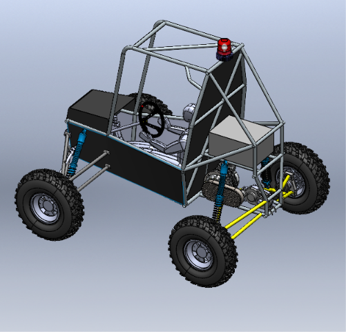

01 / VEHICLE-LEVEL DESIGNFULL VEHICLE ASSEMBLY232 COMPONENTS · PACKAGING · MASS PROPERTIES
Full Vehicle Assembly & Mass Properties
A 232-component SolidWorks assembly built to study packaging and assembly difficulty, and to estimate mass properties and centre of gravity with the driver included.
SolidWorksPackagingCAD-based CG estimate
View case study →